Breakthrough Dressage
Breakthrough Dressage
Sales
Lady's Man (Louis)
- $18,000
....
| Lou is an elastic and free moving Holsteiner gelding by Lintas out of an imported Holsteiner mare. He is currently schooling second level. Exceptional work ethic and talented hind leg. Lou is a gentleman in the barn, extremely sound and has great feet, has never needed shoes. Sweet and personable demeanor. Lou is ready to move up the levels with an ambitious amateur or pro. |
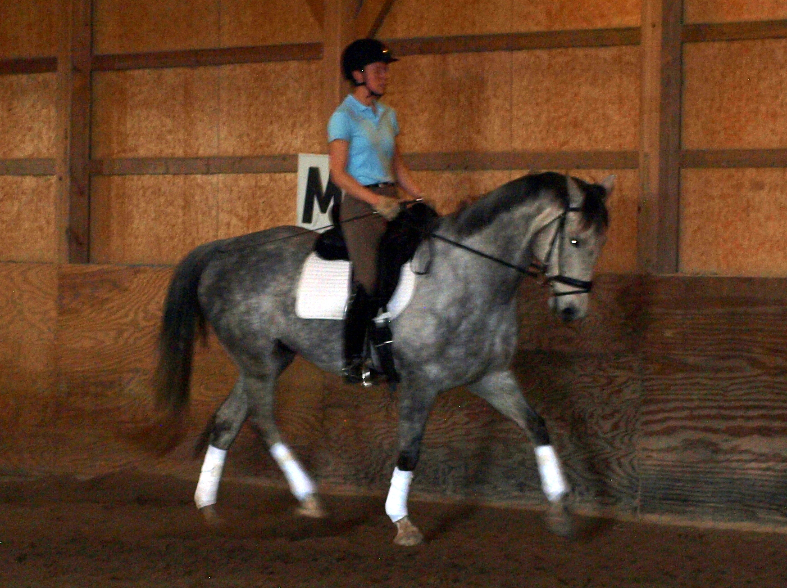 |
{kind=link}
Sangria
- $25,000
...
| Talented enough for a pro, with temperament suitable for an amateur. Sangria is the whole package! Sensitive and fun to ride with a great sensibility. Excellent talent for lateral work. Has been shown training and first level with scores in the upper 60s- low 70s. Great ground manners, loads and trailers well, has also been hacked out in the fields. |
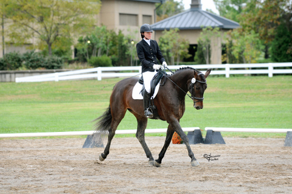 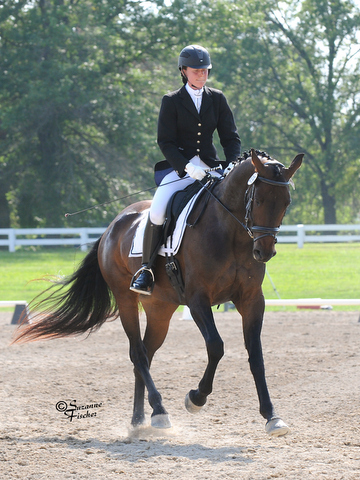 |
{kind=link}
{kind=link}
Shadow
- $6,500
11 year old thoroughbred geldin
| Shadow is an expressive, free moving 11 year old thoroughbred gelding. He is well mannered and easy to get along with. Expressive trot, uphill canter and willing attitude. Schooling first level dressage, green but willing over fences. Shadow loads, clips, bathes and stands quietly for the vet and farrier. No health or soundness problems. |
Stella Blue
- $7,500
11 year old double registered ISR and AWR solid bay mare
Stella Blue by Wradar is an elegant 11 year old double registered ISR and AWR solid bay mare. She stands 16.1 hands, has outstanding blood lines, and beautiful gaits. She is naturally rhythmical and is an honest willing jumper. She would be ideal for an upper level pony club/hunter/event/dressage prospect. She has been shown in 2013 in training level dressage and schools 2 foot courses consistently but is ready and fully capable to advance. Due to owners hectic schedule, she was able to fully mature before being started which resulted in clean dry legs but a later start. Stella is excellent on the lunge line and line drives easily. She has had a solid foundation and now needs an active rider ready to move her up the ranks. Currently in dressage training. She foaled a gorgeous first premium AWR colt in 2012 and was a wonderful brood mare. $7,500.
|
BD Codenzo
- $6,500
Cody is a 11 y.o. 14 hand American Warmblood Sport Pony gelding
|
Talent in a small package! Cody is an 11 year old 14 hand American Warmblood Sport Pony gelding. Shown western and hunt seat. Now showing Dressage Training Level and schooling First Level. 3 nice gaits with talent for extension. Excellent ground manners.
|
 |
Wacondo
- $15,000.00
16 year old imported Hanoverian gelding - 16.2 hands - Bay
| Talented 16.2 hand, 16 year old imported Hanoverian gelding. Weltmeyer grandson, by Wolkenstein II out of Wende De by Wanderer. “Jake” has powerful, elastic and expressive gaits with natural extension and uphill tendency. Effortless lateral work. Forward thinking and sensitive. Jake has been shown second level and is schooling half-steps and pirouettes. Changes started. This guy has the gaits and talent to get you noticed. No known health or soundness problems. Currently in full training with Jessie Myers. Exceptional opportunity for a professional or experienced amateur on a budget. |
 |
Serafina NF
- $20,000
6 year old Andalusian/ Fresian cross mare - 16 hands
|
6 year old Andalusian/ Fresian cross mare by the Fresian stallion Abacus Uno
and out of a PRE mare. Sera has correct conformation, 3 correct and expressive
gaits, and a phenomenal work ethic. Good ground manners, stands quietly for vet
and farrier, not marish, loads, clips, bathes. Schooling all first level movements.
Has been shown training level with scores to the mid 70s. Forward thinking and
sensitive, this talented filly is destined to be a wonderful dressage partner!
|
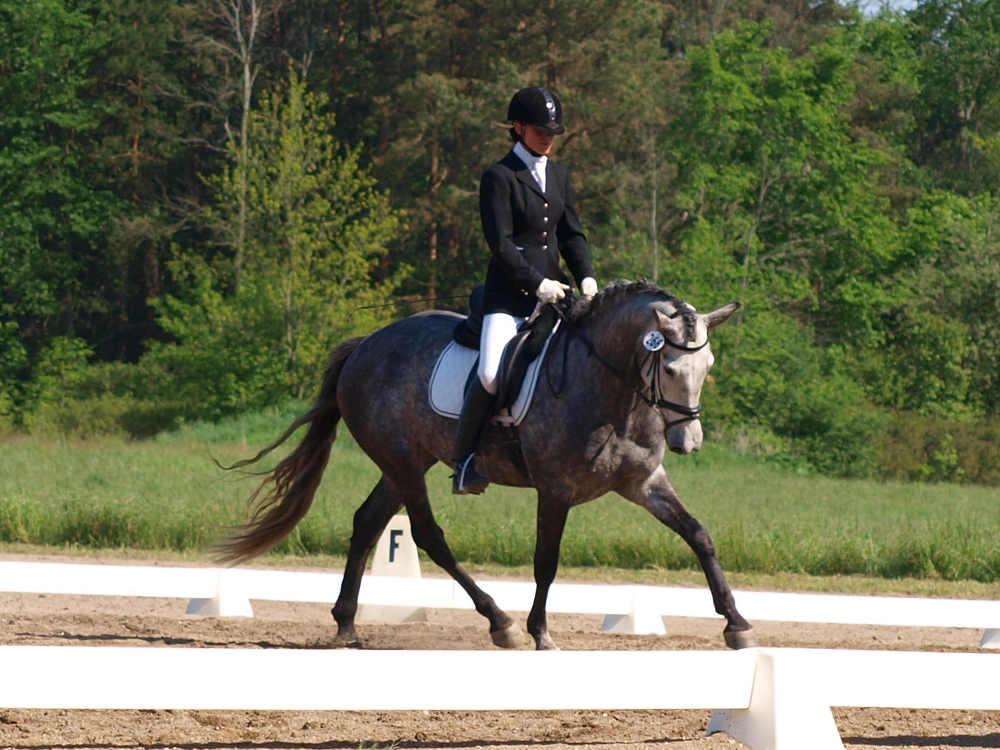 |
{kind=link}
Sterling
- $30,000
Sterling is a 16.3 hand 4 year old Westphalen gelding
|
Sterling is a 16.3 hand 4 year old Westphalen gelding by Sandreo (Sandro Hit) out of a Donnerhall mare. Mild mannered, sensitive and sensible. Athletic, elastic gates, fabulous ground covering walk. Uphill build. A willing worker ready to win in the show ring. Solid walk, trot, canter, leg yield.
|
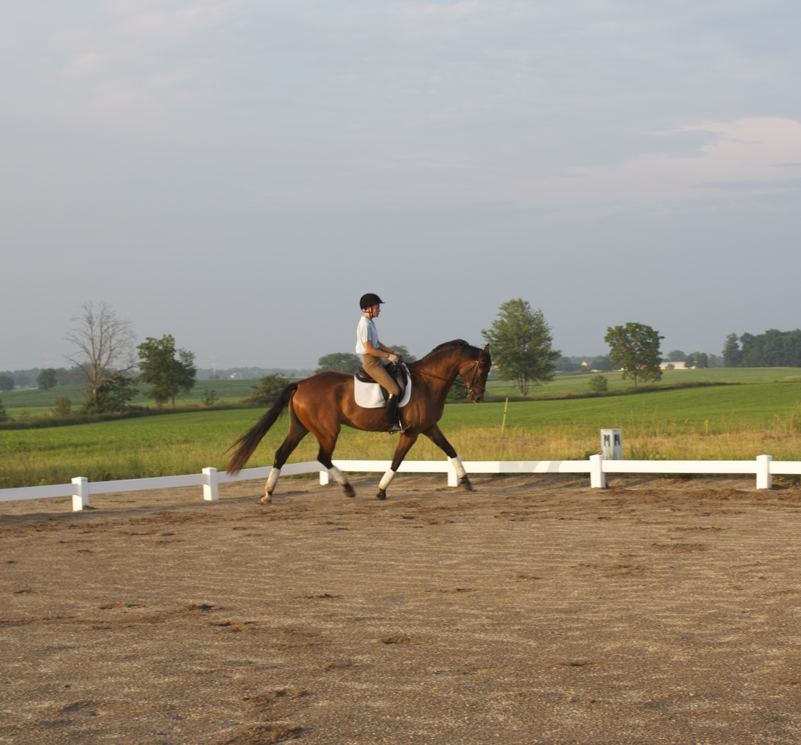 |
{kind=link}
Rebel Chip
- $10,000
Rebel Chip is a 1999 APHA gelding.
|
Chip is schooling all second and third level dressage movements and has been shown in dressage by a para-equestrian with scores into the 70s. Sane, safe, sound. He is a wonderful teacher with a willing attitude and quiet but not dull to the aids. Easy lateral work and flying changes. Many APHA points in Horsemanship, Hunter Under Saddle, and Equitation. Calm and reliable at the shows, trail rides alone or in a group. Excellent ground manners. Bathes, clips, loads, stands perfectly for vet and farrier. Absolutely no stable vices.
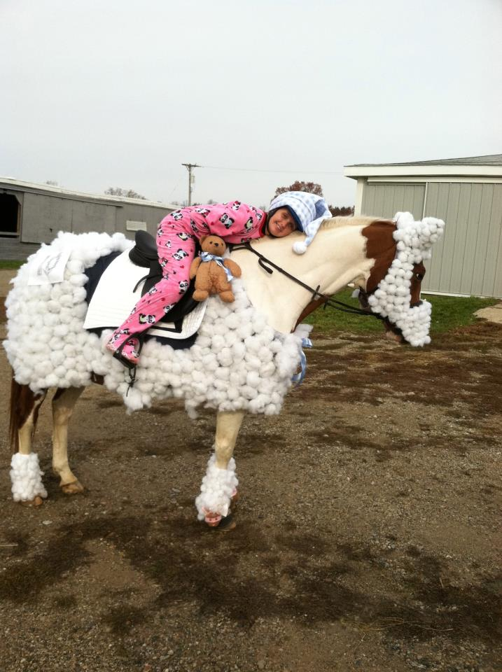 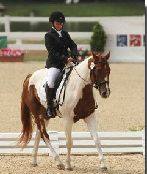 |
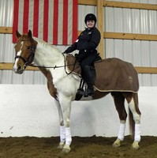 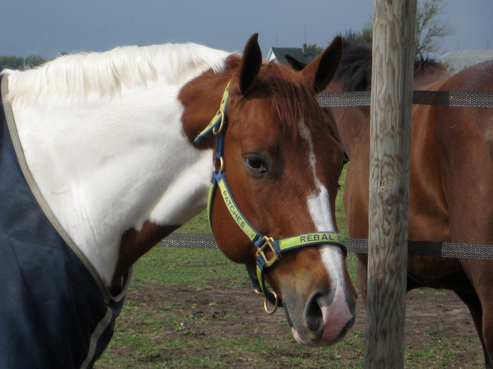 |
{kind=link}
{kind=link}
{kind=link}
{kind=link}
O Rampals Satin (Sadie)
- $7,500.00
1996 Registered Dutch Warmblood Mare - 16 hands - Grey
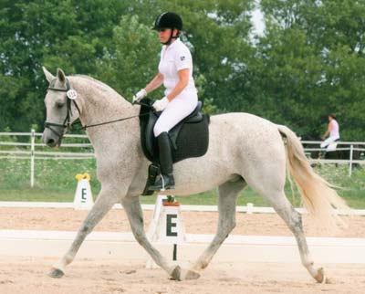 Sadie is an athletic, reliable, sound mare by Rampal. She has been shown training level by her amateur owner and is schooling second level movements. Sadie has expressive gaits and is a forward ride with a good work ethic and good whoa. She has been used in the past in a lesson program and clips, loads, and bathes like a pro! Hacks out well in our hay fields too!
Liliana
Premium 2004 GOV Oldenburg Mare
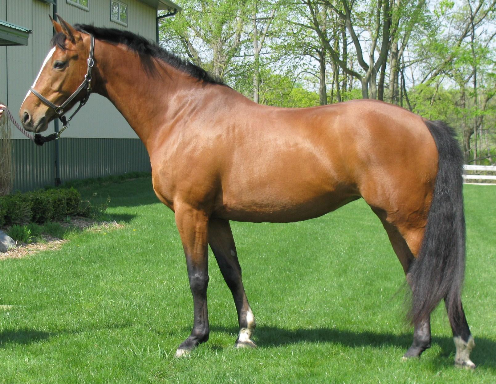 Lily is by the Stallion Landwerder by Landadel by the legendary Landgraf I Her Dam is by Goldfuerst by Goldstern by the legendary Gotthard Her pedigree reads like a who's who of influential Warmblood Stallions Due to an injury she is currently only breeding sound. This is an excellent opportunity to add some of the most influential, successful bloodlines to your Sport Horse breeding program! PRIVATE TREATY Good home a MUST!
Ruby Tuesday
- $12,000.00
2009 Oldenburg Filly by Reesling
Ruby Tuesday was presented for inspection to the ISR/OLD on Friday, Sept.11, 2009 with scores of 8.4 on conformation, 8.2 on movement (she wouldn't trot,great canter though) and 8.3 on overall impression for a final score of 8.3 -- Reesling has produced another PREMIUM foal!!!
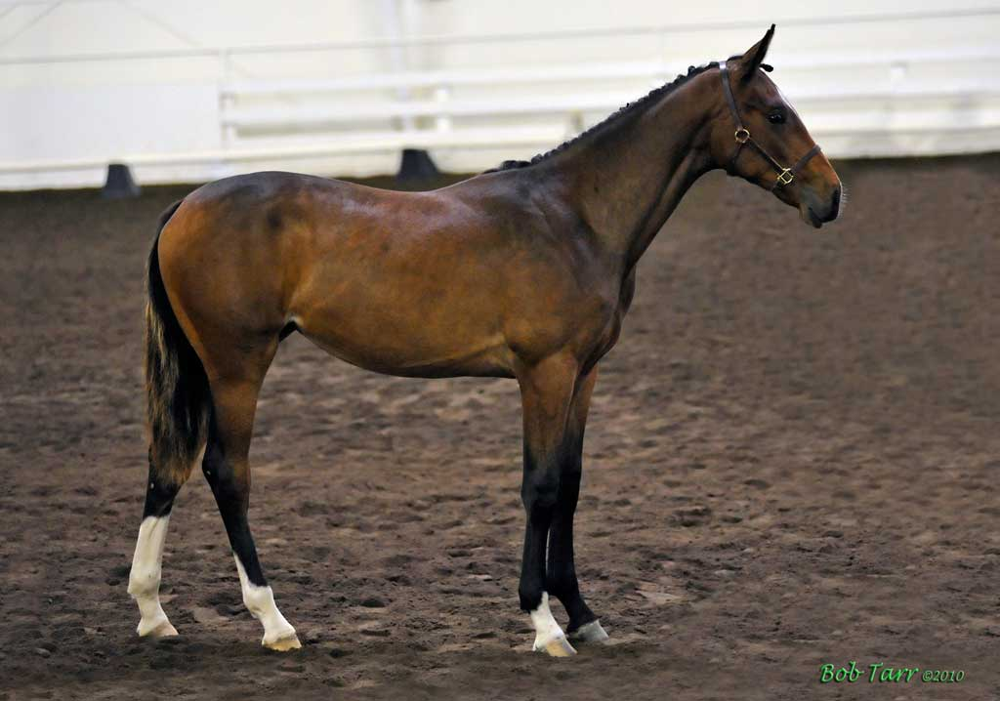
2009 SHOW RESULTS
Dressage at Waterloo, Summer Finale, Fillies of 2009, 2nd place, 74.0%
Dressage at Waterloo, July, DSHB, Fillies of 2009, 1st place, 70.9%
2010 SHOW RESULTS
Cincinnati Dressage Tradition Show Thursday Breed Show Results:
Judge: Sue Madden Mandas
- yearling fillies ~ 75.6%
- IBC OLD/ISR NA ~ 77.1% Friday Breed Show Results: Judge: Jos Sevriens
- yearling fillies ~77.7%
- IBC OLD/ISR NA ~ 77.7%